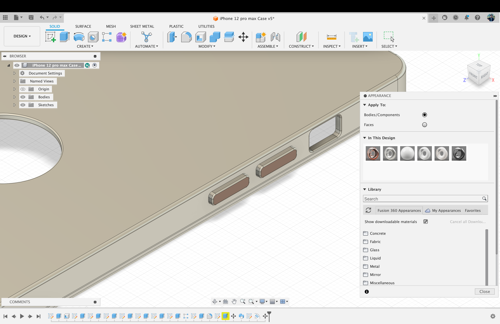
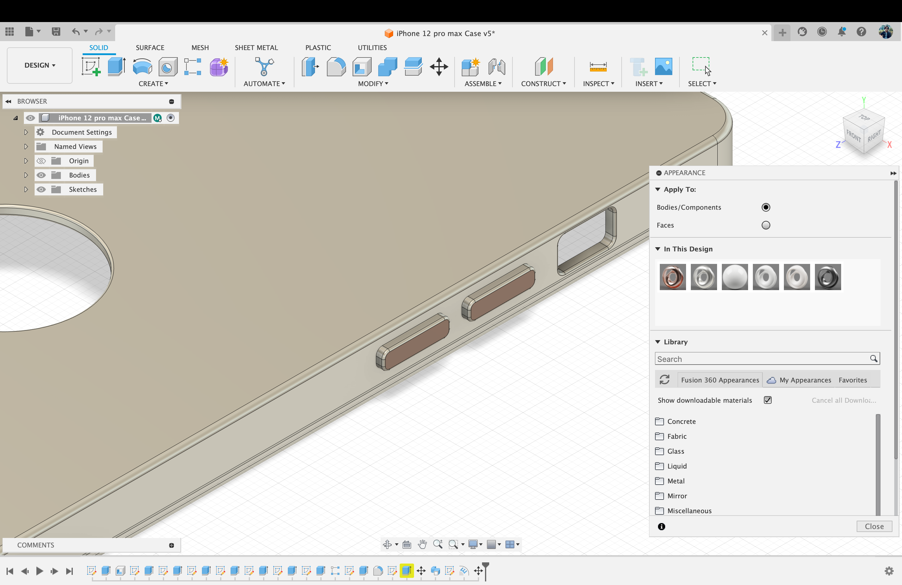

Introduction of Fuision 360
Fusion 360 offers a range of key features that make it a versatile tool for design and engineering:
- Parametric Modeling: Allows for creating and editing 3D models with parametric design, enabling easy modification by adjusting parameters.
- Cloud-Based Collaboration: Enables real-time collaboration on projects, allowing team members to work on designs simultaneously from different locations.
- CAD, CAM, and CAE Integration: Combines Computer-Aided Design (CAD), Computer-Aided Manufacturing (CAM), and Computer-Aided Engineering (CAE) in a single platform, streamlining the product development process.
- Simulation and Analysis: Includes simulation tools for stress, thermal, and modal analysis to evaluate the performance and behavior of designs under different conditions.
- Assembly Modeling: Supports the creation and management of complex assemblies, allowing users to design and visualize how components fit together.
- Rendering and Visualization: Provides tools for creating realistic renderings and visualizations of designs to communicate ideas effectively.
- Version Control: Offers version history and collaboration features, ensuring easy tracking of changes and allowing users to revert to previous versions if needed.
- Cross-Platform Accessibility: Works on multiple operating systems, including Windows and macOS, and is accessible through web browsers, enhancing flexibility in usage.
- CAM Toolpath Generation: Integrates CAM functionalities for generating toolpaths to machine designs, facilitating the transition from design to manufacturing.
- Additive Manufacturing Support: Includes features for designing and preparing models for additive manufacturing processes like 3D printing. These features collectively make Fusion 360 a comprehensive solution for the entire product development lifecycle.
How to Install
1.Layou
Create an account:
Select the "Subscribe" or "Free Trial" button based on the available options. An prompt to log in or register for an Autodesk account will appear. Please log in if you already have an account. If not, register
for a new account by filling out the required details.
Select the kind of license choose the license type based on your requirements. Fusion 360 provides both commercial licenses for professional use and free licenses for personal use. Select the relevant option and move forward.

- User Interface:
- Familiarize yourself with the Fusion 360 user interface. It consists of different workspaces for modeling, simulation, CAM, and more. Navigate through the toolbar and panels to access various features. - Create a Design:
- Begin a new design by selecting the appropriate workspace (e.g., Model, Sculpt, CAM).
- Use the tools and commands to create 3D models or perform other tasks based on your project needs. - 7. Save Your Work:
- Regularly save your work using the save functionality. Fusion 360 often auto-saves, but manual saves ensure you have the latest version saved. - 8. Exit Fusion 360:
- When you're done working, exit Fusion 360 by closing the application.
Remember, these steps provide a general overview. Specific details may vary based on the version of Fusion 360 and your operating system. Always refer to Autodesk's official documentation or support if you encounter any issues during installation or usage.
Procedure for Verification
With your email address from collage/University, you can gain access. If not, you will need to present your student ID, official transcript, and admission notice. Once an account has been created.
Design Explore and Features
Certainly, Fusion 360 offers a wide range of features across various workspaces to support different aspects of the product development process. Here's an overview of key features:
- Parametric Modeling:
- Fusion 360's core feature allows you to create 3D models with parametric design, enabling easy modifications by changing parameters. - Cloud-Based Collaboration:
- Enables real-time collaboration on projects, allowing multiple users to work on designs simultaneously from different locations. - CAD Workspaces:
- Fusion 360 provides dedicated workspaces for specific tasks such as Modeling, Sculpting, Sheet Metal, and Assemblies, offering specialized tools for each aspect of design. - CAM (Computer-Aided Manufacturing):
- Integration of CAM features allows you to generate toolpaths for CNC machining, making it easier to transition from design to manufacturing. - Simulation and Analysis:
- Fusion 360 includes simulation tools for stress, thermal, and modal analysis, helping you evaluate the performance and behavior of your designs under various conditions. - Rendering and Visualization:
- Create realistic renderings and visualizations of your designs to communicate ideas effectively. - Electronics Design:
- Fusion 360 includes tools for electronics design, allowing you to create and validate PCB (Printed Circuit Board) layouts. - Generative Design:
- Utilize generative design tools to explore multiple design iterations based on your specified constraints and goals, helping you discover innovative solutions. - Additive Manufacturing Support:
- Fusion 360 provides features for designing and preparing models for additive manufacturing processes like 3D printing. - Sustainable Design:
- Evaluate the environmental impact of your designs using tools for sustainable design analysis. - Cross-Platform Accessibility:
- Fusion 360 is accessible on multiple operating systems, including Windows and macOS, and can be accessed through web browsers. - Version Control:
- Keep track of changes with version history and collaboration features, allowing you to revert to previous versions if needed.
These features collectively make Fusion 360 a comprehensive tool for the entire product development lifecycle, from conceptualization and design to simulation, manufacturing, and collaboration.
Assignment
CAD 3D MODEL
.PNG)
Pic 1: Review the Fusion 360 User Interface
.png)
Pic 2: Select sketch menu and front view
.png)
Pic 3 : From sketch menu select circle command and select circle to tangent each other select tangent command from constraints menu.
.png)
Pic 4: select dimension command from sketch menu and giving dim to all entity.
.png)
Pic 5: select Trim command from modify menu and erase all extra line.
.png)
Pic 6: select mirror command from sketch menu and first select object line
.png)
Pic 7: select extrude command from create menu, select profile and give the thinness.
.png)
Pic 8:
.png)
Pic 9: select draft command from modify menu and select side to pull.
.png)
Pic 10:
.png)
Pic 11:
.png)
Pic 12: select Revolve command from create menu and select the profile and axis.
.png)
Pic 13: select mirror command from creat menu and select the object and plane side.
.png)
Pic 14: select move/copy command from modify menu and select the object to move.
.png)
Pic 15:
.png)
Pic 16:
.png)
Pic 17: Make a sketch and select mirror command from create menu
.png)
Pic 18:
.png)
Pic 19: Hide of the body3
.png)
Pic 20: Make a sketch of connect rod.
.png)
Pic 21: select extrude command from create menu and select the profile and giving a distance 15mm.
.png)
Pic 22:select change parameters command from 3d modify menu and select the profile and change the dia 20mm to 15mm
.png)
Pic 23:
.png)
Pic 24:
.png)
Pic 25:
.png)
Pic 26:
.png)
Pic 27: Hide the body4 from eye opt from browser menu
.png)
Pic 28: Sketch a piston profile using line and circle command
.png)
Pic 29:select revolve command from 3d create menu and select the profile and axis
.png)
Pic 30:
.png)
Pic 31:
.png)
Pic 32:
.png)
Pic 33:select change parameters command from 3d modify menu and select the profile and change the dia 68mm to 65mm.
.png)
Pic 34:
.png)
Pic 35:
.png)
Pic 36:
.png)
Pic 37: select move/copy command from 3d modify menu and click on create copy and select body12 body13 body14 body15 body16
.png)
Pic 38: select joint command from 3d assembly menu and click on component 1 and then component 2
.png)
Pic 39:
.png)
Pic 40: select component26 and right click than select ground opt to stop movement
.png)
Pic 41: select component26 and right click than select ground opt to stop movement and click on capture position opt
.png)
Pic 42:select press pull command from 3d menu and select object face and giving distance
.png)
Pic 43:For plugin select command from insert menu
.png)
Pic 44:search spur gear on search bar and select component sizes and download 3-d step file
.png)
Pic 45:
.png)
Pic 46:
.png)
Pic 47:select automate command
.png)
Pic 48:select automate command and click on 2 face and than click on avoide body than generate shapes
.png)
Pic 49:select automate command and click on 2 face and than click on avoide body than generate shapes and select the alternative 2
.png)
Pic 50:
.png)
Pic 51:
.png)
Pic 52: select component30 and right click select appearances to color
.png)
Pic 53:select metal color from appearance menu and select color and click on obj
.png)
Pic 54: select animation feature from design menu
.png)
Pic 55: From animation feature select transfer component command
.png)
Pic 56: From animation feature select transfer component command and select component to drag
.png)
Pic 57: After all component dragging, click on storyboard and than right click to copy timeline
.png)
Pic 58: After all component dragging, click on storyboard and than right click to copy timeline. Again right click to past the storyboard for reverse action
.png)
Pic 59: After all component dragging, click on storyboard and than right click to copy timeline
.png)
Pic 60: To downloading animation video click on publish opt
.png)
Pic 61:
.png)
Pic 62: After animation feature move to render feature. Elect render opt to download video.
.png)
Pic 63:After animation feature move to render feature
.png)
Pic 64:
.png)
Pic 65: After animation feature move to render feature. select render opt to download video
.png)
Pic 66:
.png)
Pic 67: After animation feature move to design feature for motion study. select motion study command from assemble menu
.png)
Pic 68: select motion study command from assemble menu. select revolve joint and giving angle, selct loop opt
.png)
Pic 69: After design feature move to drawing feature for 2d drawing of component select from design opt
.png)
Pic 70: After design feature move to drawing feature for 2d drawing of component select from design opt and select one component and set drawing sheet size
.png)
Pic 71:
.png)
Pic 72: select projected view to show the all views
.png)
Pic 73: select dim command to show all dim on drawing
.png)
Pic 74: select section view command, Select object
.png)
Pic 75:
.png)
Pic 76:
.png)
Pic 77: Double click on section line A-A(1:2).Select the Pattern
.png)
Pic 78: Select the select the detail view command and then select object
.png)
Pic 79:
.png)
Pic 80: select Text command
.png)
Pic 81: sClick on table command and then select balloon command and click on object edge


Experiment
Creating a protective case for iPhone 12 pro max
We are going to create fusion 360 software to create a protective case for iPhone 12 pro max. The process is shown step by step down below.
Images:
Image 1: Creating a new sketch with a “2 point rectangle” tool.
Image 2: Using Fillet tool to make the sketch curved.

Image 3: Using Extrude tool to give it a 3D box shape of the sketch.

Image 4: Using Shell tool to create the 3D box a shell.

Image 5: Using “Extrude” tool to cut a hole for the cameras.

Image 6: Creating small holes for action Button and apple logo of the phone.
Image 7: Making buttons with extrude tool.
Image 8: Making the edges smooth and curvy using Fillet tool.

Image 9: Creating Support for the phone using “Sweep” tool.
- Choose the surface where we want our text to be.
- Then create sketch on the surface.
- While in the sketch interface select “Text” to type text
- When the text is done, click on “Finish Sketch”
- Chose “Emboss” to extrude the text on our desired surface
- Chose the Text on the surface as your “Sketch Profile”
- And choose The Surface where the Embossed text is going to be for “Faces”
- Make sure the 1st icon is selected on “Effect” to Emboss. If you want your text to be deboss (Cut out on the surface) you can choose 2nd cut out icon.
Creating Text on iPhone 12 pro max Case
.png)
Image 1: Choose the surface where we want our text to be & create sketch on the surface
.png)
mage 2: While in the sketch interface select “Text” to type text. When the text is done, click on “Finish Sketch”
.png)
Image 3: When the text is done, click on “Finish Sketch”
.png)
Image 4: Chose “Emboss” to extrude the text on our desired surface
.png)
Image 5: Chose the Text on the surface as your “Sketch Profile”
.png)
Image 6: And choose The Surface where the Embossed text is going to be for “Faces”
.png)
Image 7: Make sure the 1st icon is selected on “Effect” to Emboss. If you want your text to be deboss (Cut out on the surface) you can choose 2nd cut out icon. You can change the “Depth” parameter according to your likings
.png)
Image 8: The result
 

Image 11: : Coloring the Buttons with “Appearance” tool.
Team Members work
Project |
Description |
| Ashraful | BOX 3D Model Using Fusion 360 |
| Abdul Huq | 3D Model Using Fusion 360 |
| Amin AL | 3D Model Using Fusion 360 |
| Ramiz | Table Lamp 3D Model Using Fusion 360 |
| AR Shoikot | 3D Model Using Fusion 360 |
| Zain | Water bottle 3D Model Using Fusion 360 |
Ashraful
Abdul Huq
Amin AL
Ramiz
AR Shoikot
Zain
Introduction SolidWork
SolidWorks is a powerful computer-aided design (CAD) and computer-aided engineering (CAE) software developed by Dassault Systèmes. It is widely used in the design and engineering fields for creating 3D models, simulations, and technical drawings. SolidWorks was first released in 1995, and since then, it has become one of the leading CAD/CAE tools in the industry.
Key features of SolidWorks include:
- Parametric Modeling: SolidWorks uses a parametric approach to design, allowing users to create 3D models by defining parameters and constraints. This enables the easy modification of designs by adjusting parameters, making it a highly flexible and efficient tool.
- Assembly Design: SolidWorks facilitates the creation of complex assemblies by allowing users to combine multiple parts into a single model. This is particularly useful for designing products with interconnected components, such as machinery and equipment.
- Simulation and Analysis: The software includes robust simulation and analysis tools that enable engineers to test and validate their designs virtually. This includes finite element analysis (FEA) for structural analysis, computational fluid dynamics (CFD) for fluid flow simulations, and other testing capabilities.
- Drawing and Detailing: SolidWorks assists in the creation of detailed 2D drawings with annotations and dimensions. These drawings are crucial for communicating design specifications to manufacturers and other stakeholders.
- Integration with other Software: SolidWorks can integrate seamlessly with other software applications, enhancing collaboration and workflow efficiency. It supports interoperability with various file formats, making it easy to exchange data with other CAD systems.
- User-Friendly Interface:The software is known for its user-friendly interface, making it accessible to both beginners and experienced professionals. It offers a range of tools and features organized in a logical manner, promoting a smooth and intuitive design process.
SolidWorks is widely used in various industries, including mechanical engineering, aerospace, automotive, electronics, and more. Its ability to streamline the design process, enhance collaboration, and facilitate efficient product development has contributed to its popularity in the engineering and manufacturing sectors.
Procedure for Verification
With your email address from collage/University, you can gain access. If not, you will need to present your student ID, official transcript, and admission notice. Once an account has been created.
Experiment
.jpg)
Review the SolidWork User Interface
.jpg)
Click on File option and select the part Feature from this menu
.jpg)
We are try to makings on this part. just for Practice